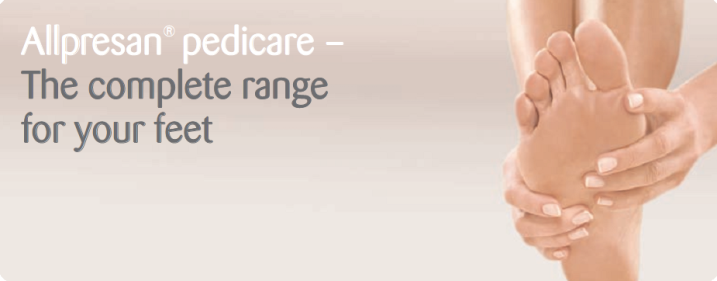

Allpresan, the original foot care foam product, was introduced to foot care professionals in the mid 1990s. With over 10 years of proven results, the product line has expanded to include solutions for use at home.
The patented formulation of the foot care foams have a unique advantage: during application they form a two-dimensional, two-phase net structure which strengthens the skin's protective function without clogging pores. Since there is no heat accumulation, the natural functions of the skin are not impaired; the skin is allowed to breath, which is especially important for sensitive skin.
Allpresan offers a product range that features various percentages of urea - 5%, 10% or 15% - for varying degrees of skin dryness.
Urea, also referred to as Carbamide, is the main ingredient in Allpresan's product line. Non-allergenic and antibacterial, urea is a natural moisturiser secreted by our own cells. Urea plays an important role in the health of the epidermis. A sample of 100 g of human skin contains normally 1,42 g of Urea and interestingly, about 7% of our natural moisturising comes from Urea.
Using Urea in the Allpresan Pedicare line has the advantage of offering odourless, colourless, hypoallergenic, antibacterial properties for various foot conditions. This ingredient is suitable for the most sensitive skin and is recommended for irritated skin, psoriasis and persons with diabetes. The application is simple and efficient thanks to its foam texture.
Click here to continue to the full Allpresan foot care line.
Click here to visit the official Allpresan webpage.
Click here to go back to the products page